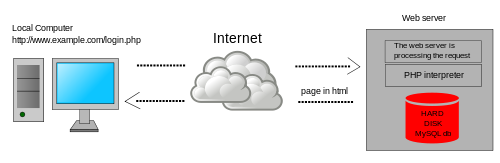

Client/Server concepts

Client-server denotes a relationship between cooperating programs in an application, composed of clients initiating requests for services and servers providing that function or service.Client-server denotes a relationship between cooperating programs in an application, composed of clients initiating requests for services and servers providing that function or service.
Components of Web Application
View Layer:- When you consider an MVC application, the View layer component gives an interface to the application. Regardless if it is for users with a browser or for another application using Web services. View layer is the bridge for getting the data in and out of the application. It does not have business logic, like calculating interest for a banking application or storing items in a shopping cart for an online catalog. It also does not contain any code for existing data or retrieving data from a data source. Business logic is managed by the Model layer. The view layer is more focused on the interface. Business Layer:- It is also known as Business Logic or Domain Logic or Application Layer. The function of the business layer is to accept user requests from the browser, process them, and determine the routes through which the data will be accessed. The workflows by which the data and requests travel through the back end lay encoded in a business layer. Data Access Layer:- This layer is built to keep the code you use to pull data from your data store like database, flat files, or web services separate from business logic and presentation code. So even if you have to change data stores, you don’t end up rewriting the whole thing. There are many ORM frameworks that are blending the DAL with other layers which makes development easy during web application development services. Error handling, security, logging:- When you build a web application, people generally tend to focus on the end-goal, building, and testing only for situations when things go right. Alas! things rarely go right all the time in the real world. This is where error handling is a vital part of any application’s user experience. And, if it is done well, it can leave your users feeling informed and properly considered.
types of Web Content
1. Blogs Blogging is an invaluable tool for driving visitors to your website, and building awareness about you and your brand. Generally written from a more personal and informal point of view than content assets, a blog is a great way to connect with readers. It is the perfect vehicle for providing them with information that not only answers a question or solves a problem, but also helps to establish you as a trusted authority on the topic. Blogs are also a great way to keep your web content fresh, enabling you to post new content on a regular basis and helping you continue to rank in SERPs (search results). 2. Content assets This broad category of web content includes collateral and similar resources you have already invested in and can now repurpose to help draw visitors to your website. Some examples are product brochures, user manuals, slide presentations, white papers, industry reports, case studies, fact sheets, ebooks, webinars, and podcasts. The goal is to extend the value of these assets by using them across different digital media and channels. The content can be broken up into smaller pieces and distributed in new ways, such as via blog posts, tweets, video clips, email blasts, search engine ads, and other channels. 3. Calls to action A call to action (CTA) is a prompt designed to get your website visitor to take some immediate action, such as make a purchase or get more information. In addition to having CTAs on your web pages, you can include them in other marketing content you use to drive traffic to your website, such as blogs, emails, social media posts, and e-newsletters.
Overview of HTTP - HTTP request response

HTTP is a protocol for fetching resources such as HTML documents. It is the foundation of any data exchange on the Web and it is a client-server protocol, which means requests are initiated by the recipient, usually the Web browser. A complete document is reconstructed from the different sub-documents fetched, for instance, text, layout description, images, videos, scripts, and more.Clients and servers communicate by exchanging individual messages (as opposed to a stream of data). The messages sent by the client, usually a Web browser, are called requests and the messages sent by the server as an answer are called responses.
Generation of dynamic web pages
Web pages that use server-side scripting are often created with the help of server-side languages such as PHP, Perl, ASP, ASP.NET, JSP, ColdFusion and other languages. These server-side languages typically use the Common Gateway Interface (CGI) to produce dynamic web pages.
Application Servers
An application server is a server that hosts applications.[1] Application server frameworks are software frameworks for building application servers. An application server framework provides both facilities to create web applications and a server environment to run them. An application server framework contains a comprehensive service layer model. It includes a set of components accessible to the software developer through a standard API defined for the platform itself. For Web applications, these components usually run in the same environment as their web server(s), and their main job is to support the construction of dynamic pages. However, many application servers do more than generate web pages: they implement services such as clustering, fail-over, and load-balancing, so developers can focus on implementing the business logic.[2] In the case of Java application servers, the server behaves like an extended virtual machine for running applications, transparently handling connections to the database on one side, and, often, connections to the Web client on the other.[citation needed] Other uses of the term may refer to the services that a server makes available or the computer hardware on which the services run.[citation needed]
web security
Web security must be a critical priority for every organization. Along with email, the web is one of the top vectors for cyberattacks. The web and the use of DNS services specifically are part of 91% of all malware attacks, and email and web together are a key part for 99% of successful breaches. While the importance of web security is undisputed, protecting against web security threats grows more challenging each day. From thwarting attacks to dealing with limits in skills and resources, IT security departments face serious challenges when trying to secure the web. In the past, security teams have deployed a collection of on-premises solutions to manage email and web security. But increasingly organizations are turning to comprehensive email and web security solutions – via integrated, cloud-based technologies that simplify the task and reduce the cost of reducing risk. And because attackers often leverage email and web channels together, a seamless and scalable strategy for protecting both is essential.